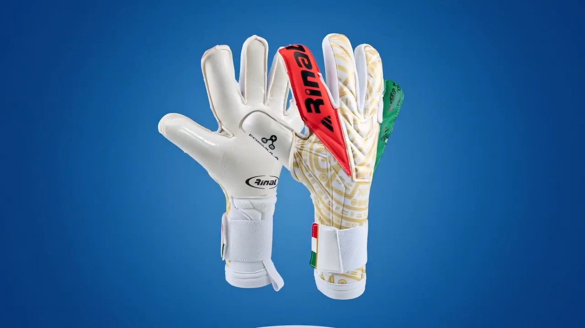
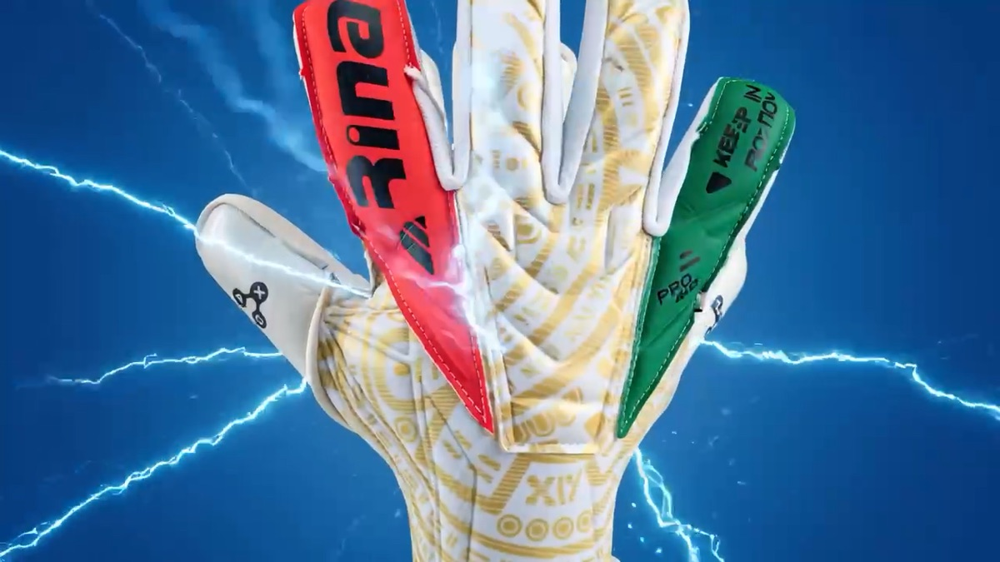

Corte negativo
Las costuras van por dentro. El guante queda ceñido, sin látex sobrante, y sientes el balón casi como con la mano desnuda. Es el favorito del portero que atrapa mucho y quiere precisión.

Guantes de portero · México
Guantes para el que se planta bajo los tres palos cada fin de semana. Cortes, látex y tallas explicados sin humo, para que compres el guante correcto a la primera.
Filtra por corte y encuentra el modelo que va con tu mano y con tu cancha. Si tienes dudas entre dos, escríbenos: preferimos que te quedes con el correcto a que devuelvas.
assets/js/productos.js. Mientras tanto las tarjetas muestran las categorías con las que trabajamos.El corte es la forma en que el látex se une al guante. No hay uno mejor que otro: hay uno mejor para tu mano y tu estilo bajo los tres palos.
Las costuras van por dentro. El guante queda ceñido, sin látex sobrante, y sientes el balón casi como con la mano desnuda. Es el favorito del portero que atrapa mucho y quiere precisión.
El látex se enrolla alrededor del dedo y desaparece la costura lateral. Más superficie de látex tocando el balón: agarre y blocaje. Ajuste más redondo y un poco más lleno que el negativo.
El clásico de toda la vida, con costura externa y una pieza plana de látex. Es el más holgado y cómodo, perfecto si vas empezando o si no te gusta sentir presión en los dedos.
Mezcla los anteriores: roll finger en unos dedos y negativo en otros. Busca el punto medio entre ajuste ceñido y superficie de contacto. Si dudas entre dos cortes, empieza por aquí.
La talla del guante no es la del zapato ni la de la playera: se saca del contorno de tu palma. Con un metro de costura (o un hilo y una regla) le atinas a la primera.
Toma un metro de costura o un hiloCon la mano dominante abierta y relajada, palma hacia arriba.
Rodea la palma por debajo de los nudillosDa la vuelta completa a la mano sin incluir el pulgar, sin apretar el metro.
Pasa la medida a pulgadas y súmale 1Si el contorno es de 20.3 cm (8 pulgadas): 8 + 1 = talla 9. Ese entero es tu talla.
¿Quedaste entre dos tallas?Sube a la mayor si te gusta el guante holgado o usas varillas; baja a la menor si buscas ajuste ceñido tipo corte negativo.
| Talla | Contorno de palma | Referencia |
|---|---|---|
| 5 | 10.2 cm · 4" | 6 a 8 años |
| 6 | 12.7 cm · 5" | 8 a 10 años |
| 7 | 15.2 cm · 6" | 10 a 12 años |
| 8 | 17.8 cm · 7" | 12 a 14 años |
| 9 | 20.3 cm · 8" | Adulto, mano estándar |
| 10 | 22.9 cm · 9" | Adulto, mano grande |
| 11 | 25.4 cm · 10" | Adulto, mano muy grande |
Bajo Los Tres Palos MX nace de la posición más ingrata y más adictiva del futbol. Sabemos lo que es que se te resbale un balón por un látex acabado, o comprar una talla de más porque nadie te explicó cómo medirte.

Mándanos tu talla, el corte que te late y en qué superficie juegas. Te decimos qué tenemos y qué te conviene.
Escríbenos por WhatsApp con tu talla y te mandamos las opciones disponibles con foto y precio el mismo día.
Escribir por WhatsApp